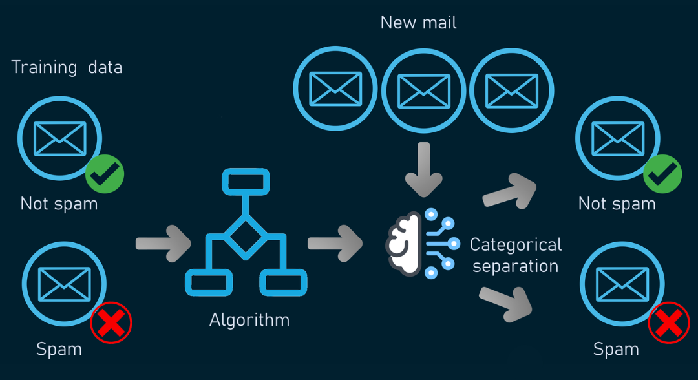
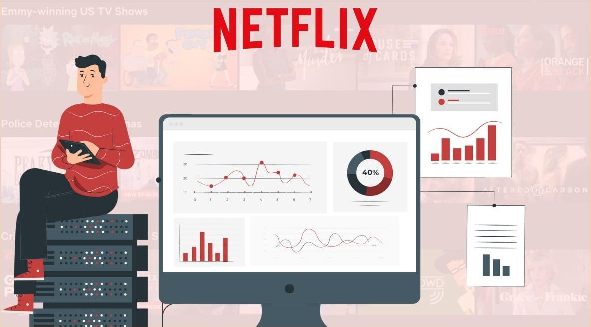
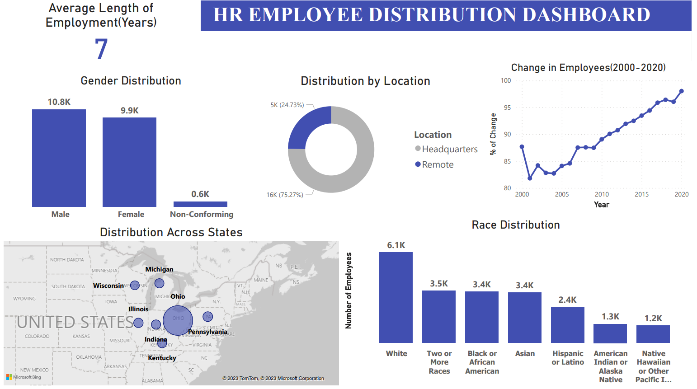

Projects
Poisonous Mushroom Classification
Employed machine learning models from scratch to classify mushrooms as poisonous or edible using Python. Built and optimized Logistic Regression, Decision Tree, Random Forest, and Deep Learning models using NumPy and TensorFlow to improve classification.

Credit Card Approval Prediction
This project focuses on credit card approval prediction using machine learning techniques. The goal of the project is to develop a model that can accurately predict whether a credit card application will be approved or not based on various features and attributes of the applicant.

SMS Spam Classification
Utilized NLTK for text pre-processing, stemming, and removal of stop words to improve model performance. Leveraged Natural Language Processing (NLP) btechniques to represent text as numerical data using Vectorization. Implemented Navie Bayes models for classification and precision score for evaluation in Python.

Netflix-Recommendation-System
This project is a Netflix recommender system built using collaborative filtering techniques. The system utilizes a bag-of-words approach to generate similarity scores between two movies. Additionally, a web app is built using Streamlit to provide a user-friendly interface, and a dashboard is created on Power BI.

Customer Cohort Analysis - SQL - Tableau
This project focuses on customer cohort analysis to gain insights into customer behavior and track their interactions with a business over time. The analysis and modeling are performed using SQL, and the results are visualized through a dashboard created on TableauPublic.
LEGO Data Analysis - SQL - Python
Performed ETL processes with MySQL Workbench. Utilized SQL queries to perform data analysis. Used Jupyter Notebook to carry out Exploratory Data Analysis(EDA) and Create various plots and visualizations to present the findings of the analysis in Python .
525 Bird Classification
This project aims to classify 525 different bird species using Convolutional Neural Networks (CNN). By leveraging the power of deep learning and computer vision, the model is trained on a large dataset of bird images to accurately classify bird species. This model achieved an F1 score of 98.97 on the test set. The was then quantized using Tensorflow, this model was further trained for 1 epoch and then converted to tflite model. A web app was developed using streamlit and was deployed on stremlit community cloud

HR Analytics Dashboard - SQL - PowerBI
This project aims to create an interactive HR dashboard using MySQL and Power BI. The dashboard provides insights and visualizations to help HR professionals analyze employee data and make informed decisions. The dataset used for this project is the HR dataset, which includes information about employees such as employee ID, name, department, salary, performance ratings, and more. The dataset is stored in a MySQL database.

Financial Complaints Dashboard-Tableau
This project focuses on analyzing and visualizing customer financial complaints using Tableau. A dashboard has been created and published on Tableau Public to provide insights into the nature of the complaints and help identify trends and patterns. The dataset used for this project consists of customer financial complaints from Data.world.